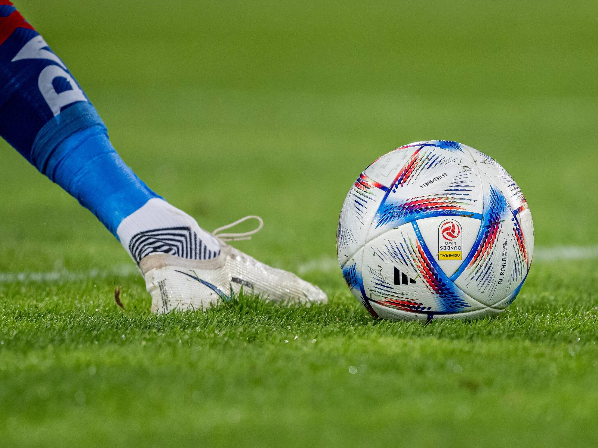
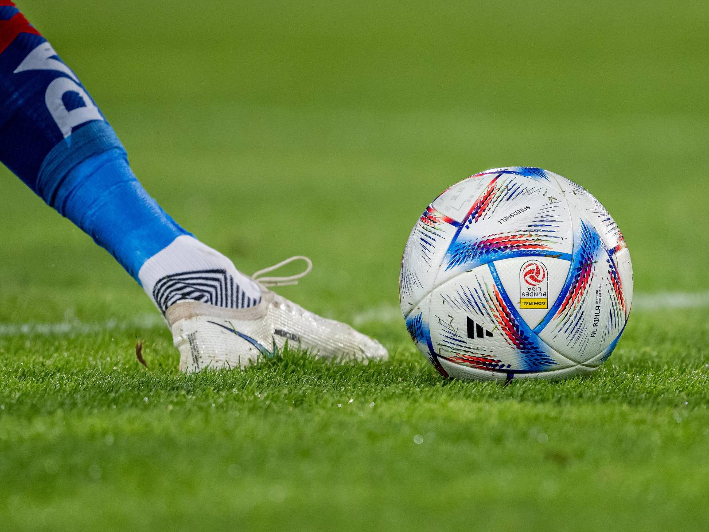

My hobbies
Beyond the realm of academics, I discovered a deep passion for sports. For six years, I dedicated myself to tennis, participating in various tournaments. While securing the second place in a Skopje tournament and placing fourth in two others, I realized my true aptitude lay in football (soccer). However, a knee injury forced me to take a break from sports. Nevertheless, my love for sports never waned. Nowadays, I engage in regular training at home and occasionally organize friendly football matches with my friends, nurturing my athletic spirit.

Another aspect that captivates my interest is cars. Since an early age, I've been fascinated by the automotive world. I began driving at the age of 13, and now I am proud to own my own car. I spend a considerable amount of time exploring and learning about cars on the internet, constantly expanding my knowledge about different models, their features, and the latest advancements in the industry.

Recently, I've found a burgeoning passion for computer science. Although it may not match the depth of my love for sports and cars just yet, it continues to grow steadily. Additionally, I proudly embrace my inner nerd and immerse myself in the world of gaming. Video games provide me with endless hours of entertainment and joy. Whether I'm racing in Forza Horizon 5, competing in FIFA matches that connect me with my love for football, or embarking on creative adventures in Minecraft, I relish the immersive experiences they offer.